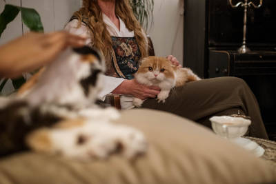

Já pensou em levar seu pet para um almoço? Não? Bem, aparentemente, mais de 250 restaurantes do Rio de Janeiro já pensaram nessa ideia!
Conheça o conceito de afago gastronômico, uma "extensão" do pet friendly, termo utilizado para descrever locais que aceitam a entrada de seus bichinhos de estimação.
Alguns restaurantes que oferecem o serviço ofertam água e petiscos para os animaizinhos. Alguns vão além e oferecem pratos que imitam as refeições dos humanos!
Leia mais sobre esta ideia fantástica nesta matéria da Veja.